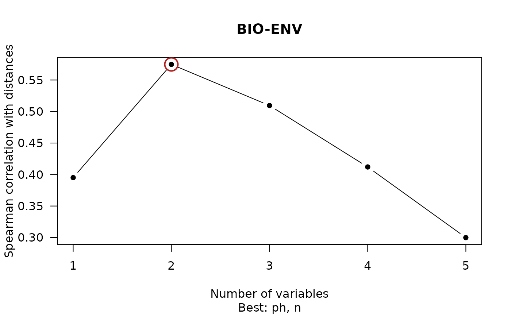

Finds the subset of environmental variables whose distances among the
samples best match the community distances: for each subset size, the
subset with the highest (rank) correlation between its distances and
dm. This is BIOENV (Clarke & Ainsworth 1993), as vegan::bioenv() and
scikit-bio's bioenv() (QIIME 2's diversity bioenv) compute it, with
the same results. Every subset is searched, in parallel C.
Usage
bioenv(
dm,
data,
formula = NULL,
method = "spearman",
metric = "euclidean",
max_vars = NULL,
given = NULL,
cpus = n_cpus()
)Arguments
- dm
The community distances: a
distobject, such as frombeta_div()orbray(), or a symmetric numeric matrix of distances.- data
The environmental variables: a data frame (or matrix) with one row per sample. Rows are matched to the samples in
dmby row name, and rows for other samples are ignored; without row names, they must be in the same order asdm.- formula
Which variables to search: a one-sided formula over the columns of
data, such as~ N + P + K + pHor~ log(N) + P, each of whose terms is one variable. They must be numeric. The default,NULL, searches every numeric column ofdata, skipping any others (and the columngivennames, if any).- method
The correlation coefficient:
'spearman','pearson', or'kendall'(tau-b), as instats::cor(). Default:'spearman'.- metric
The distances among the samples on a subset of variables:
'euclidean': Euclidean distances on the variables scaled to unit variance (and centred).'mahalanobis': Mahalanobis distances: Euclidean distances on the scaled variables, after also making them uncorrelated.'manhattan': Manhattan distances on the variables scaled to unit range (from 0 to 1).'gower': Gower distances: the Manhattan distances divided by the number of variables. Their correlations equal'manhattan''s.
Default:
'euclidean', as in scikit-bio and vegan.- max_vars
The largest subset size to search, as
vegan::bioenv()'supto. Default:NULL, every size up to the number of variables.- given
Distances whose effect is removed from each correlation, as
vegan::bioenv()'spartial: the partial correlation ofdmand each subset's distances, given these. Adistobject or a symmetric matrix, matched todm's samples by name when both have names; numeric values, one per row ofdata, whose absolute differences are the distances; or the name of a numeric column ofdata. Default:NULL.- cpus
How many parallel processing threads should be used. The default,
n_cpus(), will use all logical CPU cores.
Value
A data frame of class c('ecodive_bioenv', 'data.frame'), with
one row per subset size, as summary() of vegan::bioenv() and
scikit-bio's bioenv():
size: The number of variables.variables: The best subset of that size: the variables' names, joined by", ".correlation: Its correlation withdm.
Attributes:
best: The best subset overall (the smallest, of equally good ones): a character vector of the variables' names.method,metric: As given.partial: Whethergivenwas given.n_subsets: The number of subsets searched.
Details
Method
Each variable is standardized as metric says. For each subset of the
variables, the distances among the samples on just those variables are
correlated with the community distances dm, over the \(n(n-1)/2\)
pairs of samples, as in mantel(). For each subset size, the subset
with the highest correlation is kept. Subsets of a size are compared in
the order of utils::combn() (the order of the variables), and the first
of equally good ones is kept, as in scikit-bio and vegan.
With given, each correlation is the partial correlation of dm (\(x\))
and the subset's distances (\(y\)) given those distances (\(z\)),
$$r_{xy.z} = \frac{r_{xy} - r_{xz} r_{yz}}{\sqrt{1 - r_{xz}^2}
\sqrt{1 - r_{yz}^2}}$$
as in mantel_partial(). As vegan says, this is strictly correct only
for Pearson.
A subset's correlation is undefined (and never best) when its distances
are all equal, or, for 'mahalanobis', when its variables are linearly
dependent. A size with no defined correlation has NA values.
The best subset is chosen to fit dm, so its correlation is biased
upwards: a Mantel test of it against dm doesn't give a valid p-value.
Speed
There are \(2^p - 1\) subsets of \(p\) variables (with max_vars = NULL), so the search doubles in time with each variable: about a million
subsets for 20 variables. max_vars limits it. Each subset takes one pass
over the pairs of samples (and a sort, for Spearman and Kendall), with no
\(n \times n\) matrix, and subsets run in parallel. Results are identical
for any number of cpus.
Differences from vegan::bioenv()
dmmust be distances: there's no community table andindex. Compute them first, as withbray()(which equalsvegdist()'s default).Variables come from
datathroughformula, or are its numeric columns, rather than being a separateenvtable. Factors aren't searched, even with'gower'.givenmay also be one value per sample, or a column name ofdata.Samples are matched by name between
dm,data, andgiven.The result is the table that
summary()of vegan's result gives.
Same names in other packages
vegan::bioenv() has the same name. When both packages are attached,
the one attached last masks the other; call ecodive::bioenv() to be
sure.
References
Clarke, K. R., & Ainsworth, M. (1993). A method of linking multivariate community structure to environmental variables. Marine Ecology Progress Series, 92, 205-219. doi:10.3354/meps092205
Examples
# 30 samples, with five environmental variables; pH and N shift
# the first five genera.
set.seed(1)
counts <- matrix(rpois(30 * 20, 5), 30, 20)
rownames(counts) <- paste0('S', 1:30)
env <- data.frame(
row.names = rownames(counts),
ph = runif(30, 6, 8),
n = runif(30, 0, 10),
p = runif(30, 0, 10),
k = runif(30, 0, 10),
depth = runif(30, 0, 5) )
counts[, 1:5] <- counts[, 1:5] + round(4 * (env$ph - 6) + env$n / 2)
dm <- bray(counts)
# The best subset of each size.
res <- bioenv(dm, env)
res
#> size variables correlation
#> 1 1 ph 0.3950963
#> 2 2 ph, n 0.5748103
#> 3 3 ph, n, k 0.5094742
#> 4 4 ph, n, k, depth 0.4120055
#> 5 5 ph, n, p, k, depth 0.2998922
plot(res)

# Only some variables, transformed, with subsets of up to two.
bioenv(dm, env, ~ ph + log(n) + p, max_vars = 2)
#> size variables correlation
#> 1 1 log(n) 0.4565752
#> 2 2 ph, log(n) 0.6646602
# Removing the effect of depth.
bioenv(dm, env, ~ ph + n + p + k, given = 'depth')
#> size variables correlation
#> 1 1 ph 0.3958804
#> 2 2 ph, n 0.5765360
#> 3 3 ph, n, k 0.5101373
#> 4 4 ph, n, p, k 0.3723358